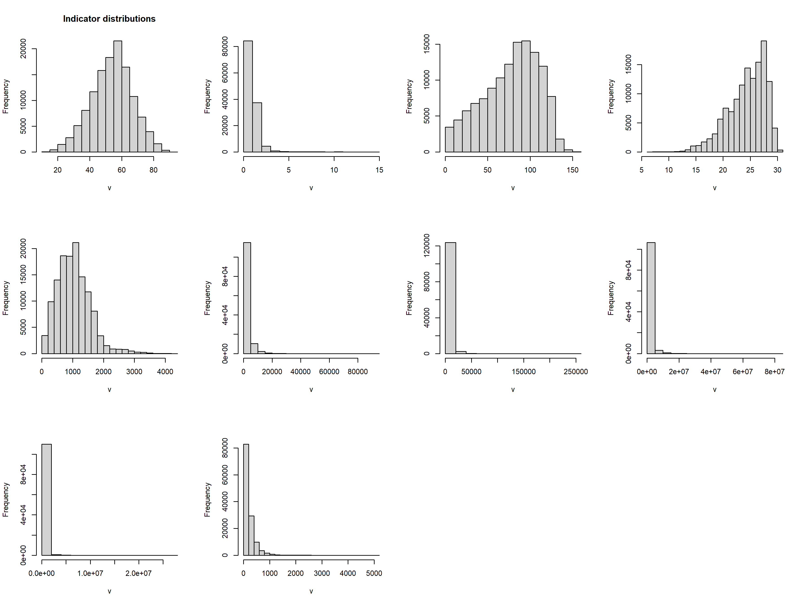
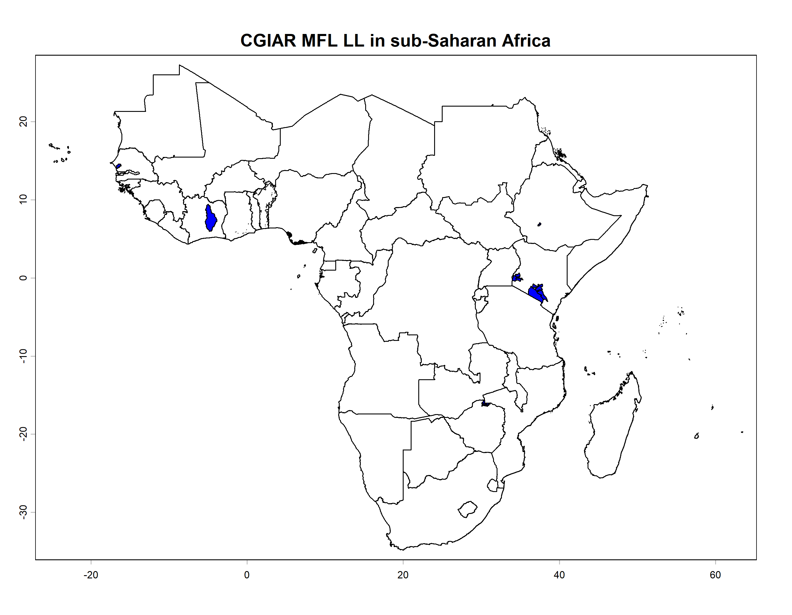
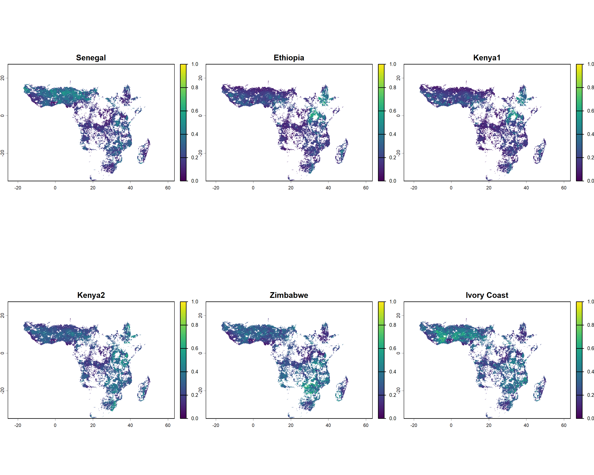
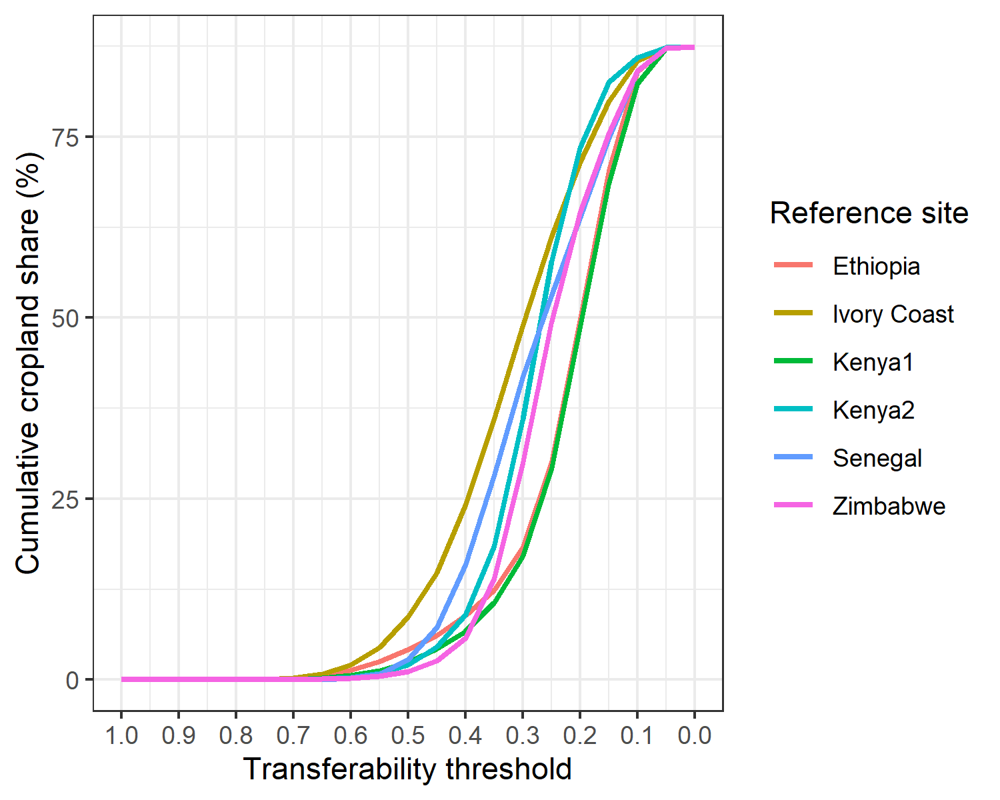
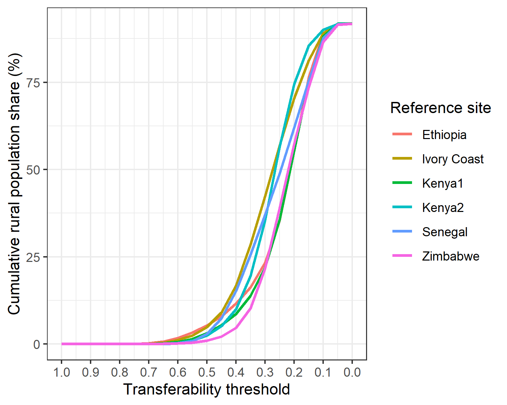
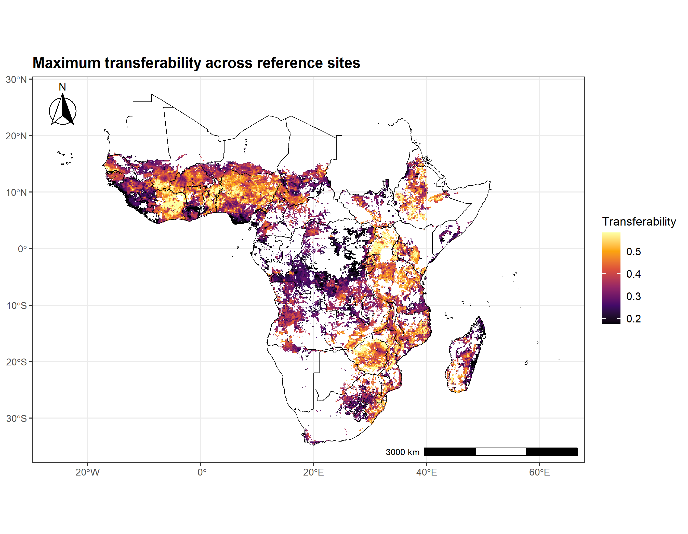

Chapter 14 Technology extrapolation domains
This chapter presents a spatial approach to assessing the potential transferability of technologies from reference sites to other areas with similar environmental and socioeconomic characteristics.
14.1 Introduction
Areas sharing similar farming system, environmental, and socio-economic characteristics with a given project site are assumed to have high potential for technology transfer, following the approach of Václavík et al. (2016). The underlying assumption is that technologies developed or tested in a particular context are more likely to be relevant in other areas with similar characteristics. Identifying such areas can help assess the potential geographical reach of research results and inform the scaling-up of agricultural technologies and innovations.
In this example, we assess the transferability potential of technologies in the african Living Labs of the CGIAR Science Program on Multi-Functional Landscapes. The analysis uses a set of biophysical and socio-economic indicators to characterize the conditions surrounding each Living Lab and identify other cropland areas with similar characteristics.
This chapter describes a spatial workflow for assessing the transferability of technologies from reference sites to other cropland areas. It combines environmental, soil, livestock, agricultural production and accessibility indicators to characterize the conditions surrounding each reference site. The similarity between each reference site and other cropland areas is quantified using Euclidean distances between their standardized indicator profiles. These distances are then converted into a transferability index, with higher values indicating greater similarity to the reference site.
The workflow has three main stages:
- prepare and harmonize the spatial datasets;
- calculate a transferability index for each reference site;
- estimate the cumulative cropland and rural population potentially reached at different transferability thresholds.
The final stage provides an indication of the potential geographical reach of technologies associated with each reference site. It allows the extent of potentially relevant cropland and the population living in these areas to be assessed at different levels of similarity. The transferability index is an indicator of similarity to the conditions of a reference site. It is not, by itself, evidence that a technology will perform equally well elsewhere. Agronomic validation remains necessary.
A standalone R script containing the workflow is available here: https://github.com/FBaudron/book_standardized_workflows/blob/main/14-technology_extrapolation_domains/technology_extrapolation_domains.R.
We first load the necessary packages.
if (!require("terra")) install.packages("terra")
if (!require("geodata")) install.packages("geodata")
if (!require("sf")) install.packages("sf")
if (!require("dplyr")) install.packages("dplyr")
if (!require("ggplot2")) install.packages("ggplot2")
if (!require("ggspatial")) install.packages("ggspatial")
if (!require("tidyterra")) install.packages("tidyterra")
library(terra)
library(geodata)
library(sf)
library(dplyr)
library(ggplot2)
library(ggspatial)
library(tidyterra)
path = "Data"14.2 Preparing the data
Sections 14.2.1 and 14.2.2 are the same as sections 11.2.1 and 11.2.2 in Chapter 11.
The shapefiles and rasters required for the analysis were produced in Chapter 3. They can also be downloaded here: https://www.dropbox.com/scl/fo/hdfjnxt05c7tyf2rkgm23/AMkKt6PRDyLops16iksFk68?rlkey=ppdlzleowakrd6apn666retvw&st=ul9fo7p3&dl=0.
14.2.1 Indicator stack
ssa = vect("Data/Spatial/Processed/ssa.shp")
cropland_fraction = rast("Data/Spatial/Processed/cropland.tif")
cropmask = rast("Data/Spatial/Processed/cropmask.tif")
sand = rast("Data/Spatial/Processed/sand.tif")
soil_n = rast("Data/Spatial/Processed/soil_n.tif")
awc = rast("Data/Spatial/Processed/pawc.tif")
mean_temperature = rast("Data/Spatial/Processed/tavg.tif")
annual_precipitation = rast("Data/Spatial/Processed/prec.tif")
tlu = rast("Data/Spatial/Processed/tlu.tif")
rural_population = rast("Data/Spatial/Processed/rural_population.tif")
value_food_crops = rast("Data/Spatial/Processed/value_food_crops.tif")
value_nonfood_crops = rast("Data/Spatial/Processed/value_nonfood_crops.tif")
travel_time = rast("Data/Spatial/Processed/travel_time.tif")
indicator_stack = c(sand, soil_n, awc, mean_temperature, annual_precipitation, tlu,
rural_population, value_food_crops, value_nonfood_crops, travel_time)
names(indicator_stack) = c("sand", "soil_n", "awc", "mean_temperature", "annual_precipitation",
"tlu", "rural_population", "value_food_crops", "value_nonfood_crops", "travel_time")
plot(indicator_stack)
14.2.2 Transformation and standardisation of the data
To reduce the influence of extreme values, we plot histograms of continuous variables, and when distribution departs too much from a Gaussian distribution, we log-transform the variable.
In our case, soil_n, tlu, rural_population, value_food_crops, value_nonfood_crops, and travel_time have distributions that depart markedly from a Gaussian ones.
terra::hist(indicator_stack, main = "Indicator distributions")
We log-transform strongly right-skewed indicators, using log1p(), which handles zero values without requiring an arbitrary offset. We create first a copy of the raster stack before data transformation.
indicator_transformed = indicator_stack
vars_log = c("soil_n", "tlu", "rural_population", "value_food_crops", "value_nonfood_crops",
"travel_time")
for (v in vars_log) {
indicator_transformed[[v]] = log1p(indicator_transformed[[v]])
}We inspect transformed variables to verify that the transformations behaved as expected.
terra::hist(indicator_transformed, main = "Indicator distributions after transformation")
The indicators are measured in different units and have different numerical ranges. They are therefore standardized using Z-scores before clustering.
For each indicator \(k\), the standardized value is:
\[ z_{pk} = \frac{x_{pk} - \mu_k}{\sigma_k} \]
where \(x_{pk}\) is the value of indicator \(k\) in pixel \(p\), and \(\mu_k\) and \(\sigma_k\) are the mean and standard deviation of that indicator across the analysis domain.
indicator_means = global(indicator_transformed, "mean", na.rm = TRUE)
indicator_sds = global(indicator_transformed, "sd", na.rm = TRUE)
indicator_means = as.numeric(indicator_means[, 1])
indicator_sds = as.numeric(indicator_sds[, 1])
indicator_z = (indicator_transformed - indicator_means)/indicator_sds
names(indicator_z) = paste0(names(indicator_transformed), "_z")14.2.3 Reference sites
The reference sites are provided as a GeoPackage and can be downloaded here https://github.com/FBaudron/book_standardized_workflows/blob/main/14-technology_extrapolation_domains/ll_mfl.gpkg In this example, the layer contains polygons of the Living Labs in sub-Saharan Africa from the CGIAR Science Program Multi-Functional Landscapes, and a district attribute identifying each reference site.
reference_sites = vect("Data/ll_mfl.gpkg")
reference_sites = reference_sites[reference_sites$district %in% c("Senegal", "Ethiopia",
"Kenya1", "Kenya2", "Zimbabwe", "Ivory Coast"), ]
plot(ssa, main = "CGIAR MFL LL in sub-Saharan Africa")
plot(reference_sites, add = TRUE, col = "blue")
Each reference site is characterized by the mean value of each standardized indicator within its polygon. The resulting site profile represents the environmental and socioeconomic conditions associated with that site.
The district attribute identifies the reference sites.
site_names = unique(reference_sites$district)
site_names = site_names[!is.na(site_names)]
site_profiles = data.frame(site = site_names, matrix(NA_real_, nrow = length(site_names),
ncol = nlyr(indicator_z)))
names(site_profiles)[-1] = names(indicator_z)
for (i in seq_along(site_names)) {
site_polygon = reference_sites[reference_sites$district == site_names[i], ]
# Dissolve polygons belonging to the same reference site
site_polygon = terra::aggregate(site_polygon, by = "district", dissolve = TRUE)
# Calculate the mean of each indicator within the site
site_values = terra::extract(indicator_z, site_polygon, fun = mean, na.rm = TRUE)
site_profiles[i, -1] = as.numeric(site_values[1, -1])
}
# Transpose site profiles: indicators in rows, reference sites in columns
site_profiles_t = as.data.frame(t(site_profiles[, -1]))
names(site_profiles_t) = site_profiles$site
site_profiles_t = data.frame(Indicator = rownames(site_profiles_t), site_profiles_t,
row.names = NULL, check.names = FALSE)
site_profiles_t %>%
knitr::kable(digits = 2, booktabs = TRUE, caption = "Mean standardized indicator values across reference sites")| Indicator | Senegal | Ethiopia | Kenya1 | Kenya2 | Zimbabwe | Ivory Coast |
|---|---|---|---|---|---|---|
| sand_z | 0.93 | -1.40 | -1.44 | -0.66 | 0.97 | 0.49 |
| soil_n_z | 0.07 | 1.72 | 1.70 | 0.53 | -0.31 | -0.18 |
| awc_z | -0.75 | 0.61 | 0.23 | 0.22 | -0.26 | 0.57 |
| mean_temperature_z | 0.84 | -0.91 | -0.78 | -1.08 | -0.35 | 0.63 |
| annual_precipitation_z | -0.88 | 0.48 | 0.85 | -0.59 | -0.57 | 0.04 |
| tlu_z | 0.89 | 1.28 | 0.91 | 0.89 | 0.12 | -0.10 |
| rural_population_z | 1.17 | 1.22 | 1.05 | 0.51 | -0.27 | 0.20 |
| value_food_crops_z | 0.63 | 0.60 | 0.59 | 0.24 | -0.84 | 0.43 |
| value_nonfood_crops_z | -0.18 | 0.86 | 1.16 | 0.13 | 0.29 | 1.06 |
| travel_time_z | -0.97 | -0.79 | -1.63 | -0.63 | 0.09 | -0.62 |
14.3 Calculate technology transferability
For each reference site, the Euclidean distance between the site’s mean standardized profile and every cropland pixel is calculated.
\[ d_{pi} = \sqrt{\sum_{k=1}^{K}(z_{pk}-\bar{z}_{ik})^2} \]
where:
- \(d_{pi}\) is the distance between pixel \(p\) and reference site \(i\);
- \(z_{pk}\) is the standardized value of indicator \(k\) in pixel \(p\);
- \(\bar{z}_{ik}\) is the mean standardized value of indicator \(k\) at reference site \(i\);
- \(K\) is the number of indicators.
Distance is converted into a transferability index using an exponential decay function:
\[ Pr_{pi} = \exp(-\lambda d_{pi}) \]
The parameter \(\lambda\) controls how rapidly transferability decreases as distance increases. A larger value produces a more restrictive transferability surface.
The value used in the original script is 0.4. This parameter should be treated as an analytical choice and tested through sensitivity analysis.
lambda = 0.4
transferability_stack = rast()
for (i in seq_along(site_names)) {
site_profile = as.numeric(site_profiles[i, -1])
distance_squared = (indicator_z - site_profile)^2
distance_to_site = sqrt(sum(distance_squared))
transferability = exp(-lambda * distance_to_site)
names(transferability) = site_names[i]
transferability_stack = c(transferability_stack, transferability)
}The maps show the geographical distribution of pixels with different degrees of similarity to each reference site.
plot(transferability_stack, range = c(0, 1), main = names(transferability_stack))
A transferability value close to one indicates high similarity to the reference site’s profile. A value close to zero indicates low similarity.
14.4 Calculate cumulative reach
The cumulative reach analysis estimates the cropland area and rural population located in pixels with transferability values equal to or greater than a given threshold.
The physical area of each pixel is calculated in hectares. Cropland fraction is then used to estimate the cropland area within each pixel.
The following code accommodates cropland fractions expressed either as proportions or percentages.
maximum_cropland_fraction = global(cropland_fraction, "max", na.rm = TRUE)[1, 1]
cropland_divisor = ifelse(maximum_cropland_fraction > 1, 100, 1)
pixel_area_ha = cellSize(cropmask, unit = "ha")
cropland_area_ha = pixel_area_ha * (cropland_fraction/cropland_divisor)
cropland_area_ha = mask(cropland_area_ha, cropmask)The cumulative reach is calculated at thresholds from 1 to 0, in increments of 0.05. For each threshold, the cropland area and rural population in pixels meeting or exceeding the threshold are summed.
transferability_thresholds = seq(1, 0, by = -0.05)
total_cropland_ha = global(cropland_area_ha, "sum", na.rm = TRUE)[1, 1]
total_rural_population = global(rural_population, "sum", na.rm = TRUE)[1, 1]Calculate cumulative reach for each reference site
cumulative_reach = data.frame()
for (i in seq_along(site_names)) {
site_transferability = transferability_stack[[i]]
cumulative_cropland = numeric(length(transferability_thresholds))
cumulative_population = numeric(length(transferability_thresholds))
for (j in seq_along(transferability_thresholds)) {
threshold_mask = site_transferability >= transferability_thresholds[j]
cumulative_cropland[j] = global(cropland_area_ha * threshold_mask, "sum",
na.rm = TRUE)[1, 1]
cumulative_population[j] = global(rural_population * threshold_mask, "sum",
na.rm = TRUE)[1, 1]
}
site_reach = data.frame(reference_site = site_names[i], transferability_threshold = transferability_thresholds,
cumulative_cropland_ha = cumulative_cropland, share_cropland_pct = 100 *
cumulative_cropland/total_cropland_ha, cumulative_rural_population = cumulative_population,
share_rural_population_pct = 100 * cumulative_population/total_rural_population)
cumulative_reach = rbind(cumulative_reach, site_reach)
}The cumulative reach curves show how the share of cropland and rural population increases as the transferability threshold becomes less restrictive.
ggplot(cumulative_reach, aes(x = transferability_threshold, y = share_cropland_pct,
colour = reference_site)) + geom_line(linewidth = 1) + scale_x_reverse(breaks = seq(0,
1, by = 0.1)) + labs(x = "Transferability threshold", y = "Cumulative cropland share (%)",
colour = "Reference site") + theme_bw()
ggplot(cumulative_reach, aes(x = transferability_threshold, y = share_rural_population_pct,
colour = reference_site)) + geom_line(linewidth = 1) + scale_x_reverse(breaks = seq(0,
1, by = 0.1)) + labs(x = "Transferability threshold", y = "Cumulative rural population share (%)",
colour = "Reference site") + theme_bw()
14.5 Calculate combined portfolio reach.
Individual transferability maps can overlap geographically. To calculate the combined reach of the portfolio, the maximum transferability value across all reference sites is calculated for each pixel.
This creates an envelope representing the best match to at least one reference site.
maximum_transferability = app(transferability_stack, fun = max, na.rm = TRUE)
# Visual stretch: 1st–99th percentiles
stretch_limits = quantile(terra::values(maximum_transferability), probs = c(0.05,
0.95), na.rm = TRUE)
ggplot() + geom_spatraster(data = maximum_transferability) + geom_spatvector(data = ssa,
fill = NA, color = "black", linewidth = 0.3) + scale_fill_viridis_c(option = "inferno",
limits = stretch_limits, oob = scales::squish, name = "Transferability", na.value = "transparent") +
coord_sf() + labs(title = "Maximum transferability across reference sites") +
theme_bw() + theme(plot.title = element_text(size = 14, face = "bold"), legend.position = "right",
legend.title = element_text(size = 11), legend.text = element_text(size = 10),
axis.title = element_blank(), panel.background = element_rect(fill = "white",
color = NA), plot.background = element_rect(fill = "white", color = NA)) +
annotation_scale(location = "br", width_hint = 0.3) + annotation_north_arrow(location = "tl",
which_north = "true", style = north_arrow_fancy_orienteering())
Below, we use a threshold of 0.6, but it can be changed depending on the desired level of similarity.
selected_threshold = 0.6
combined_reach_mask = ifel(maximum_transferability >= selected_threshold, 1, NA)
combined_cropland = mask(cropland_area_ha, combined_reach_mask)
combined_population = mask(rural_population, combined_reach_mask)
combined_cropland_ha = global(combined_cropland, "sum", na.rm = TRUE)[1, 1]
combined_rural_population = global(combined_population, "sum", na.rm = TRUE)[1, 1]
combined_reach_summary = data.frame(transferability_threshold = selected_threshold,
unique_cropland_ha = combined_cropland_ha, share_cropland_pct = 100 * combined_cropland_ha/total_cropland_ha,
unique_rural_population = combined_rural_population, share_rural_population_pct = 100 *
combined_rural_population/total_rural_population)
# Transpose summary table for a vertical layout
combined_reach_summary_t = data.frame(Indicator = names(combined_reach_summary),
Value = as.numeric(combined_reach_summary[1, ]))
combined_reach_summary_t$Indicator = c("Transferability threshold", "Unique cropland area (ha)",
"Share of total cropland (%)", "Rural population reached", "Share of total rural population (%)")
combined_reach_summary_t %>%
knitr::kable(digits = 2, booktabs = TRUE, col.names = c("Indicator", "Value"),
caption = "Cropland and rural population within the combined reach area")| Indicator | Value |
|---|---|
| Transferability threshold | 0.60 |
| Unique cropland area (ha) | 776459548.13 |
| Share of total cropland (%) | 4.30 |
| Rural population reached | 19653337.22 |
| Share of total rural population (%) | 3.85 |